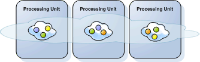
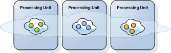
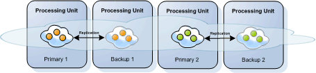

Section Summary: GigaSpaces Data-Grid components
| Basic Components | Data Grid Topologies | Space-Based Architecture | Runtime Components |
|---|
Data Grid
In Memory Data Grid - IMDG, or Enterprise Data Grid - EDGA set of space instances, typically running within their respective processing unit instances. Key Sentence: A set of connected space instances holding objects form a space cluster |
 A Data Grid with 3 Instances |
Data Grid Topologies
Partitioned Data GridEach Data Grid instance (partition) holds a different subset of the objects in the Data Grid. |
 A Partitioned Data Grid with 3 Instances, each holding a different set objects |
Primary Backup Partitioned Data GridA partitioned Data Grid, with one or more backup instances for each partition. Each of the Data Grid instances (partitions) holds a different subset of the objects in the Data Grid, and replicates this subset to its backup instance/s. |
 A Primary Backup Partitioned Data Grid: 2 partitions, each replicates to one backup instance |
| For details about scaling a running space cluster in runtime see the Dynamic Partitioning section. |
| Basic Components | Data Grid Topologies | Space-Based Architecture | Runtime Components |
|---|